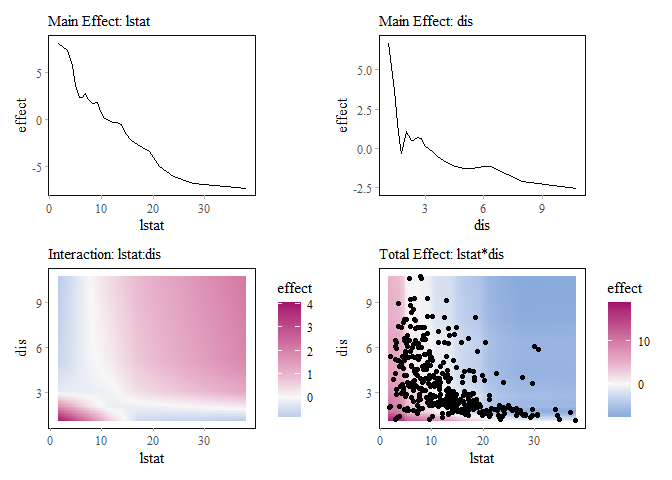
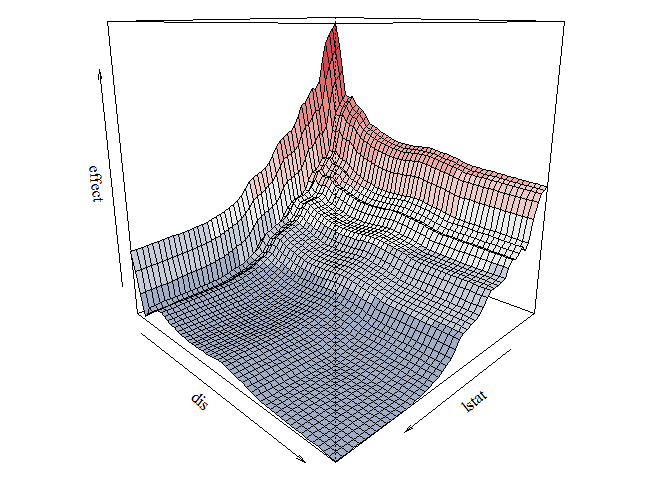
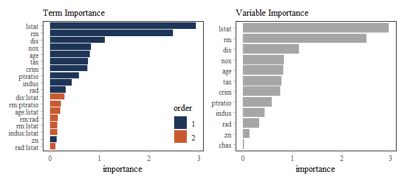
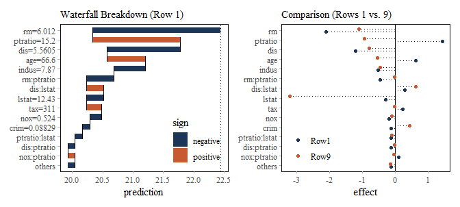
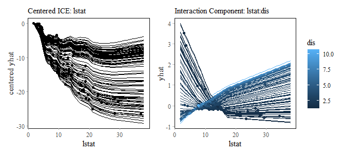
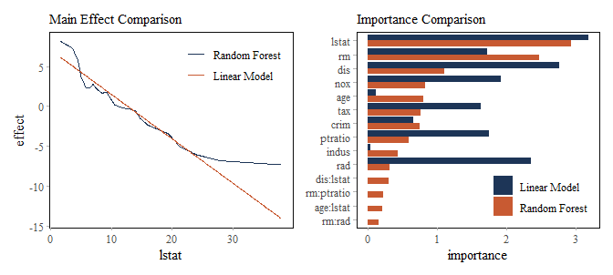
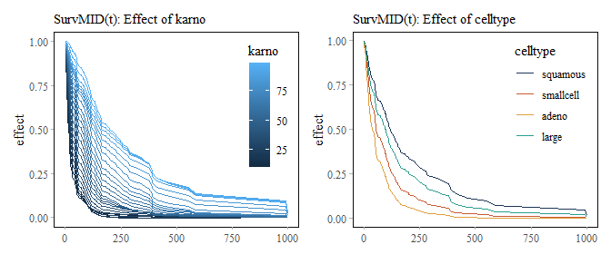

The goal of midr is to provide a model-agnostic framework for interpreting black-box predictive models by constructing a globally interpretable surrogate model via Maximum Interpretation Decomposition (MID). MID finds an optimal functional ANOVA decomposition (main effects and low-order interactions) that minimizes the squared error against the target model’s predictions. The theoretical foundations are described in Iwasawa & Matsumori (2026) [Forthcoming], and the package itself is detailed in Asashiba et al. (2025).
Installation
You can install the released version of midr from CRAN with:
install.packages("midr")and the development version from GitHub with:
# install.packages("pak")
pak::pak("ryo-asashi/midr")Surrogate Modeling and Component Plots
In this example, we fit a random forest to the Boston housing dataset (ISLR2) and construct a two-dimensional MID surrogate with interpret().
library(midr)
library(ggplot2)
library(patchwork)
library(ranger)
theme_set(theme_monograph())
midr_options(qualitative = "ukiyoe")
data("Boston", package = "ISLR2")
set.seed(42)
idx <- sample(nrow(Boston), nrow(Boston) * 0.75)
train <- Boston[ idx, ]
valid <- Boston[-idx, ]
rf <- ranger(medv ~ ., train, mtry = 5)
preds_rf <- predict(rf, valid)$predictions
mid <- interpret(medv ~ .^2, train, rf, lambda = 0.1)
mid
#>
#> Call:
#> interpret(formula = medv ~ .^2, data = train, model = rf, lambda = 0.1)
#>
#> Model Class: ranger
#>
#> Intercept: 22.446
#>
#> Main Effects:
#> 12 main effect terms
#>
#> Interactions:
#> 66 interaction terms
#>
#> Uninterpreted Variation Ratio: 0.016248
preds_mid <- predict(mid, valid)
c(
rf_rmse = sqrt(mean((valid$medv - preds_rf)^2)),
surrogate_rmse = sqrt(mean((preds_rf - preds_mid)^2))
)
#> rf_rmse surrogate_rmse
#> 3.351362 1.106667Component functions can be visualized using either base graphics (plot()) or ggplot2 (ggmid()). Setting main.effects = TRUE (or terms = "lstat * dis") displays the total of main and interaction effects.
wrap_plots(
ggmid(mid, "lstat") + labs(subtitle = "Main Effect: lstat"),
ggmid(mid, "dis") + labs(subtitle = "Main Effect: dis"),
ggmid(mid, "lstat:dis") + labs(subtitle = "Interaction: lstat:dis"),
ggmid(mid, "lstat*dis", type = "compound") +
labs(subtitle = "Total Effect: lstat*dis")
)
Perspective plots (persp()) are supported in midr starting from version 0.7.0.
par_monograph(mar = rep(0, 4))
persp(mid, "lstat*dis", theta =135, theme = "steps")
Post-Hoc Explanations
midr provides unified eval_*() functions for global importance, local prediction breakdowns, and individual conditional expectations (ICE; Goldstein et al., 2015).
Term and Variable Importance
eval_importance() summarizes the contribution of each main and interaction term, or aggregates them by variable with by = "variable".
imp <- eval_importance(mid)
imp_var <- eval_importance(mid, by = "variable")
wrap_plots(
nrow = 1L,
ggmid(imp, max.nterms = 18, theme = "ukiyoe", legend = "bottomright") +
labs(subtitle = "Term Importance"),
ggmid(imp_var) +
theme(legend.position = "none") +
labs(subtitle = "Variable Importance")
)
Prediction Breakdowns
eval_breakdown() decomposes individual predictions into additive term effects. Passing multiple indices to rows returns a midbrks collection for side-by-side comparison.
bds <- eval_breakdown(mid, data = valid, rows = c(1L, 9L))
labels(bds) <- c("Row1", "Row9")
wrap_plots(
nrow = 1L,
ggmid(bds[[1L]], legend = "bottomright") +
labs(subtitle = "Waterfall Breakdown (Row 1)"),
ggmid(bds, type = "dotchart", legend = "bottomleft") +
labs(subtitle = "Comparison (Rows 1 vs. 9)")
)
Conditional Expectations (ICE)
eval_conditional() computes ICE curves for the full model or for any submodel extracted with subset().
ice_full <- eval_conditional(mid, "lstat", max.nsamples = 100L)
ice_int <- eval_conditional(subset(mid, terms = "lstat:dis"), "lstat", max.nsamples = 100L)
wrap_plots(
nrow = 1L,
ggmid(ice_full, type = "centered") +
labs(subtitle = "Centered ICE: lstat"),
ggmid(ice_int, var.color = dis) +
labs(subtitle = "Interaction Component: lstat:dis")
)
Multi-Model Comparison and SurvMID(t)
Multiple MID models can be bundled with midlist() (producing a mids / midrib collection) to compare surrogates across different black-box models or hyperparameters.
lm_fit <- lm(medv ~ ., train)
mid_lm <- interpret(medv ~ ., train, lm_fit, k = 2)
mids <- midlist(
"Random Forest" = mid,
"Linear Model" = mid_lm
)
wrap_plots(
nrow = 1L,
ggmid(mids, "lstat", legend = "topright") +
labs(subtitle = "Main Effect Comparison"),
ggmid(
eval_importance(mids),
max.nterms = 14,
legend = "bottomright"
) +
labs(subtitle = "Importance Comparison")
)
When interpret() is given a prediction function that returns an matrix—such as survival probabilities evaluated at multiple time horizons —it automatically fits a time-dependent collection (SurvMID(t)) in a single call.
library(survival)
data("veteran", package = "survival")
cox_fit <- coxph(Surv(time, status) ~ karno + age + celltype, data = veteran)
smid <- interpret(
Surv(time, status) ~ karno + age + celltype,
data = veteran,
model = cox_fit,
lambda = 0.1
)
wrap_plots(
nrow = 1L,
ggmid(smid, "karno + 1", type = "series", legend = "topright") +
labs(subtitle = "SurvMID(t): Effect of karno"),
ggmid(smid, "celltype + 1", type = "series", legend = "topright") +
labs(subtitle = "SurvMID(t): Effect of celltype")
)
References
[1] Iwasawa, H. & Matsumori, Y. (2026). “A Functional Decomposition Approach to Maximize the Interpretability of Black-Box Models”. [Forthcoming]
[2] Asashiba, R., Kozuma, R. & Iwasawa, H. (2025). “midr: Learning from Black-Box Models by Maximum Interpretation Decomposition”. https://arxiv.org/abs/2506.08338
[3] Goldstein, A., Kapelner, A., Bleich, J., & Pitkin, E. (2015). “Peeking Inside the Black Box: Visualizing Statistical Learning With Plots of Individual Conditional Expectation”. Journal of Computational and Graphical Statistics, 24(1), 44–65. https://doi.org/10.1080/10618600.2014.907095